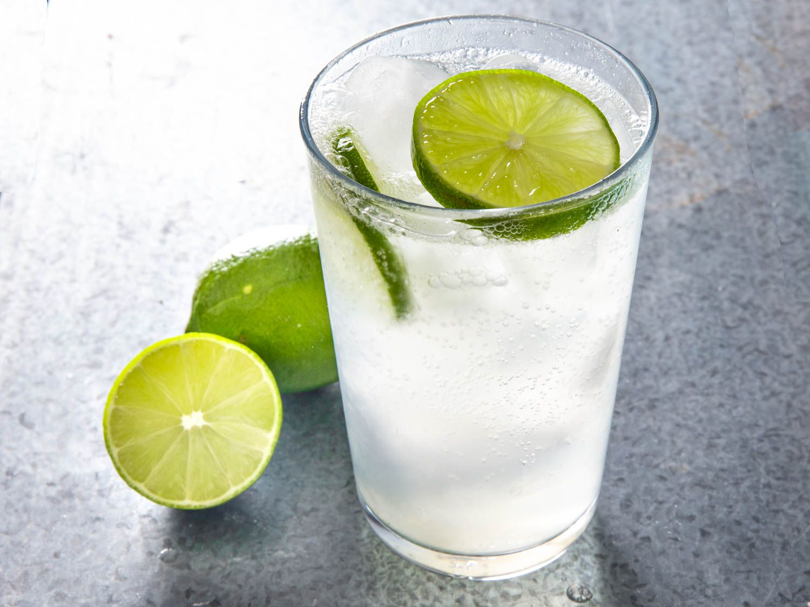

Oreo Shake Recipe

Ingredients
- Lemon: Juice of 1 fresh lemon (about 2 tablespoons)
- 1.5 to 2 tablespoons (adjust to taste, or use simple syrup)
- 1/4 teaspoon of table salt or black salt (kala namak) for an authentic Indian-style kick
- Water: 2 tablespoons of chilled water
- Club Soda: 1 cup (chilled)
Steps
- Mix the base: In a tall serving glass, combine the fresh lemon juice, sugar, salt, and chilled water. Stir vigorously until the sugar and salt are completely dissolved
- Add ice & aromatics: Drop in your ice cubes and mint leaves. (Pro-tip: Wet the ice cubes with a little water first—this prevents the soda from losing its fizz too quickly.)
- Pour the soda: Slowly pour the chilled club soda to fill the glass.
- Serve: Give it a gentle, quick stir and enjoy immediately while it is perfectly fizzy.
Home